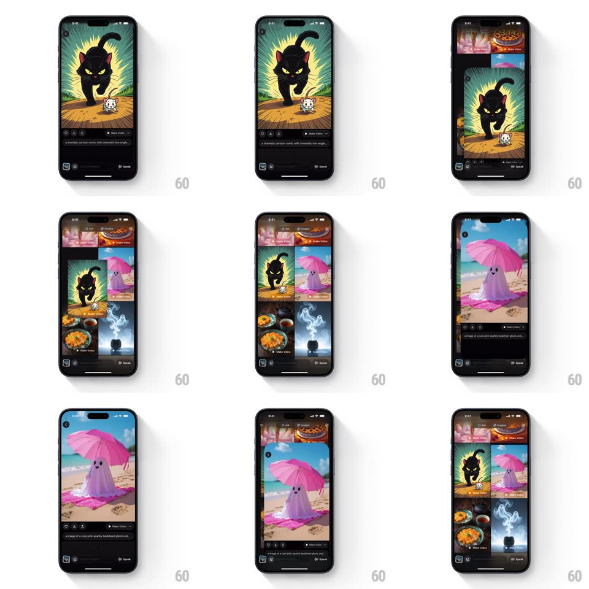

Media
Frame-by-frame

Rebuild this interaction 1:1: Grok Imagine's pull-down dismiss - dragging down on a full-screen generated image shrinks it back into its exact grid cell with spring physics while the grid fades back in behind.

Rebuild this interaction 1:1: Grok Imagine's pull-down dismiss - dragging down on a full-screen generated image shrinks it back into its exact grid cell with spring physics while the grid fades back in behind. ## Integration Integration: stack-agnostic spec - springs given as stiffness/damping, timed motions as duration + curve; map every value to your framework and animation library of choice. ## Scene A two-column grid of generated images (black cat on a bed, pink ghost on a beach, food, smoke). The open viewer shows one image full-screen on black with a caption line and an action row (likes, Make Video, Speak). Dismissing returns the image to its grid position. ## Motion spec Pattern: pull-to-dismiss with shared-element return, ~400ms. - Drag: the card tracks the finger vertically 1:1; as it travels it scales down (1 -> 0.6 at 300px of travel) and its corner radius grows (0 -> 24px); the black backdrop fades proportionally (opacity 1 -> 0). - Release above threshold: the card springs back to full-screen (spring ~380/24, 300ms). - Release past threshold (~120px): the card flies to its grid cell rect - position, size, and corner radius all animating together (spring ~320/22, 350ms) - while the grid crossfades in (200ms). - Caption and action row fade out within the first 80px of drag. ## Calibration - The returning card lands pixel-aligned on its cell - no settle bounce at the end. - Neighboring grid cells never move; only the backdrop and card animate. ## Reduced motion Tap-to-close crossfades the viewer out (250ms). ## Don't miss - Corner radius and scale change together during the drag, not only on release. - The backdrop fade is tied to drag distance, not a timed fade.